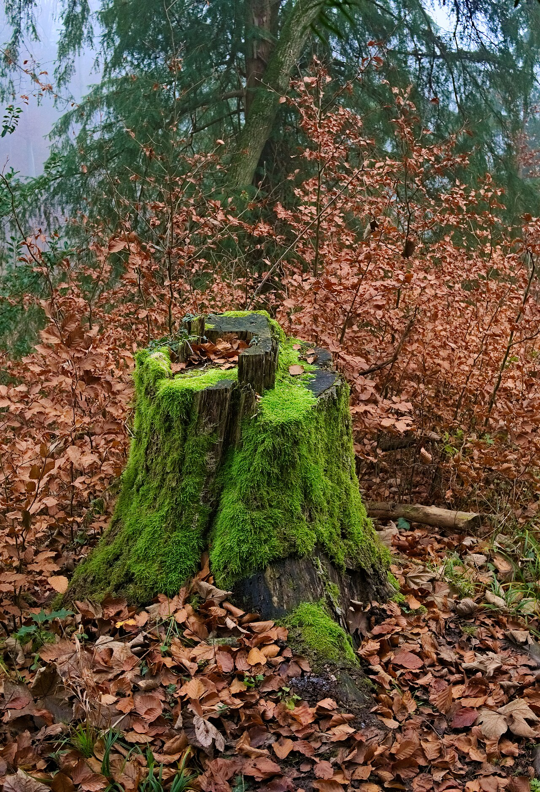

Stump Grinding
The stump goes too.
A leftover stump is a trip hazard, a magnet for honey fungus and a pain to mow around. Grinding removes it quickly and cleanly.
What's involved
A stump grinder chips the stump and main roots down to 15-30cm below ground level - deep enough to turf, replant or lay paving over. The grindings make excellent mulch for your borders, or they can be taken away. Narrow-access machines fit through a standard garden gate.
Typical cost
From around £60 for a small stump to £300+ for a large mature stump. Cheaper per stump when several are done in one visit.
Good to know
Grinding is almost always better than digging out - no hole to fill, no root plate to dispose of, no damage to surrounding ground.
